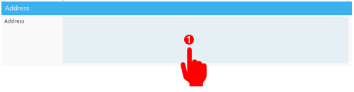
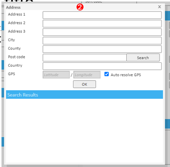
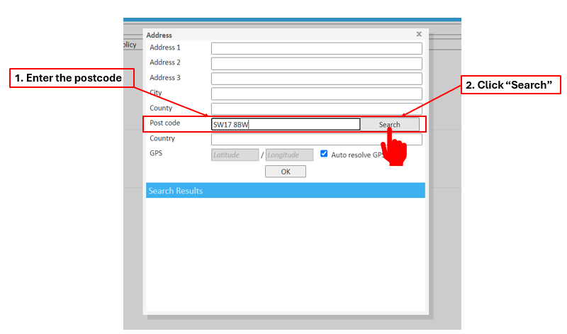
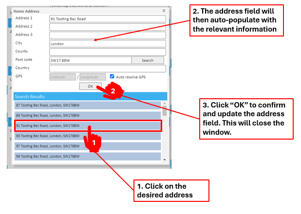
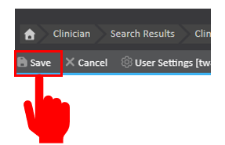
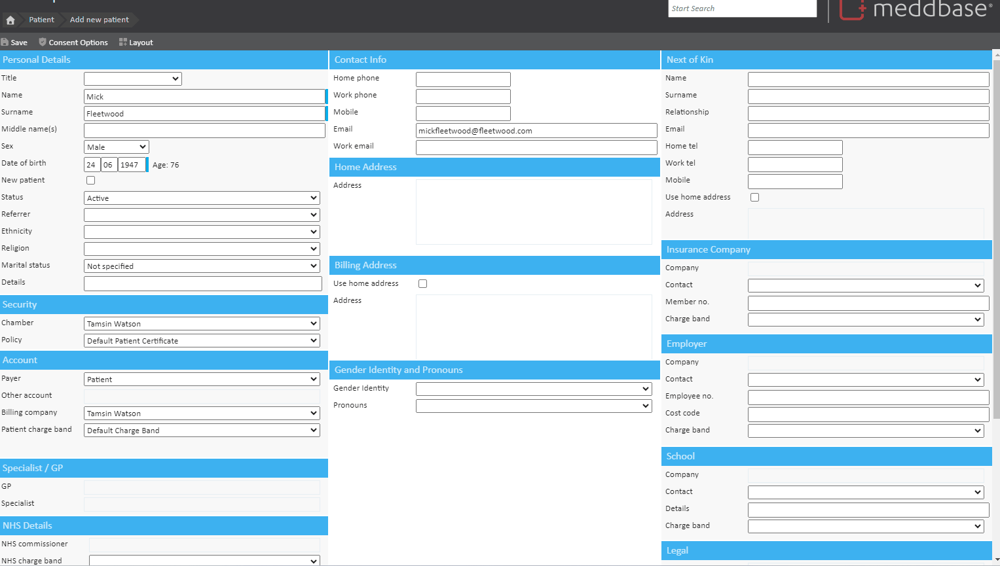
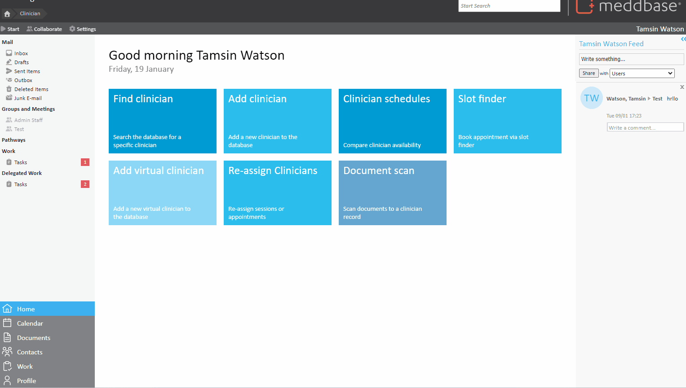

Having accurate patient contact information, including postal addresses, can enhance the overall efficiency and accuracy of healthcare administration. Therefore, integrating an address validation system, such as the Royal Mail's PAF for UK-based practices, can be beneficial in specific scenarios to ensure the reliability of patient address information within the EMR system.
The Address Loook-up feature (also known as Postcode Look-up) is a functionality embedded into all product solutions. Royal Mail's postcode lookup service to quickly and easily find addresses for employees, companies and clinicians. Employees can also use this feature to set their address via the Employee Portal.
This will ensure accuracy when inputting personal data, reducing the risk of error.
PAF is widely recognised as the UK’s most up-to-date and complete address database. It contains
over 30 million business and residential addresses, and 1.8 million postcodes, which are verified each day by Royal Mail’s 65,000 postmen and women. This means company addresses are also updated, making data accurate and reliable.
This function is only available in the U.K.
The purpose of this article is to provide a walk-through on how to implement and use the Address Look-up feature when creating a new record and updating existing records.
To implement the feature, you need to ensure the functionality is enabled in your chamber. You can do this by navigating to Admin > Configuration > System features and checking the Address lookup by postcode box.
When creating a record for a new patient, clinician, non-medical staff or company, there is an Address field. This Address field looks empty until you click on the box to bring up an address form in a new window.
Step 1: To access the PAF feature you will need to click on the "Address" box. This will then bring up the address form window.


Step 2: In the postcode text box, type in the postcode then press the "Search" button.

Step 3: After you have clicked the search button, if there are multiple addresses attached to that postcode, it will bring you a selection to choose from. You may need to scroll.
* If there is only 1 address linked to the postcode, it will auto-populate the form for you. You will then jump to step 5, clicking "ok".
Step 4: Click on the correct address in the scroll list and the form will auto populate.
Step 5: Once the form has populated, check the address is correct then click "OK".

Step 6: Save your changes using the "Save" button on the top left tool bar, below the breadcrum trail.

* This functionality is also available when updating records if a patient, clinician, non-medical staff or company changes their address.
The video below shows how to add an address via the Address Finder when creating a new patient record.

The video below shows the functionality when updating a clinicians record.
